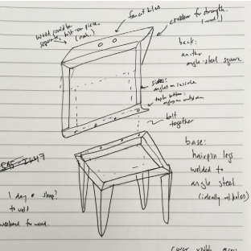
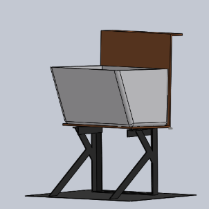

View a map of local newspapers across the US, with links to each paper's website.
This Section


Sink Design
This sink design picture is square to show that square is possible.

Same Sink Design
Here's the same design again, now in CAD, and over here. The point here is that the picture can be in a circle and the two things on this line line up nicely.